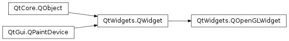

QOpenGLWidget¶
Synopsis¶
Functions¶
- def
context() - def
defaultFramebufferObject() - def
doneCurrent() - def
format() - def
grabFramebuffer() - def
isValid() - def
makeCurrent() - def
setFormat(format) - def
setTextureFormat(texFormat) - def
setUpdateBehavior(updateBehavior) - def
textureFormat() - def
updateBehavior()
Virtual functions¶
- def
initializeGL() - def
paintGL() - def
resizeGL(w, h)
Signals¶
- def
aboutToCompose() - def
aboutToResize() - def
frameSwapped() - def
resized()
Detailed Description¶
The
PySide2.QtWidgets.QOpenGLWidgetclass is a widget for rendering OpenGL graphics.
PySide2.QtWidgets.QOpenGLWidgetprovides functionality for displaying OpenGL graphics integrated into a Qt application. It is very simple to use: Make your class inherit from it and use the subclass like any otherPySide2.QtWidgets.QWidget, except that you have the choice between usingPySide2.QtGui.QPainterand standard OpenGL rendering commands.
PySide2.QtWidgets.QOpenGLWidgetprovides three convenient virtual functions that you can reimplement in your subclass to perform the typical OpenGL tasks:
PySide2.QtWidgets.QOpenGLWidget.paintGL()- Renders the OpenGL scene. Gets called whenever the widget needs to be updated.PySide2.QtWidgets.QOpenGLWidget.resizeGL()- Sets up the OpenGL viewport, projection, etc. Gets called whenever the widget has been resized (and also when it is shown for the first time because all newly created widgets get a resize event automatically).PySide2.QtWidgets.QOpenGLWidget.initializeGL()- Sets up the OpenGL resources and state. Gets called once before the first timePySide2.QtWidgets.QOpenGLWidget.resizeGL()orPySide2.QtWidgets.QOpenGLWidget.paintGL()is called.If you need to trigger a repaint from places other than
PySide2.QtWidgets.QOpenGLWidget.paintGL()(a typical example is when usingtimersto animate scenes), you should call the widget’sPySide2.QtWidgets.QWidget.update()function to schedule an update.Your widget’s OpenGL rendering context is made current when
PySide2.QtWidgets.QOpenGLWidget.paintGL(),PySide2.QtWidgets.QOpenGLWidget.resizeGL(), orPySide2.QtWidgets.QOpenGLWidget.initializeGL()is called. If you need to call the standard OpenGL API functions from other places (e.g. in your widget’s constructor or in your own paint functions), you must callPySide2.QtWidgets.QOpenGLWidget.makeCurrent()first.All rendering happens into an OpenGL framebuffer object.
PySide2.QtWidgets.QOpenGLWidget.makeCurrent()ensure that it is bound in the context. Keep this in mind when creating and binding additional framebuffer objects in the rendering code inPySide2.QtWidgets.QOpenGLWidget.paintGL(). Never re-bind the framebuffer with ID 0. Instead, callPySide2.QtWidgets.QOpenGLWidget.defaultFramebufferObject()to get the ID that should be bound.
PySide2.QtWidgets.QOpenGLWidgetallows using different OpenGL versions and profiles when the platform supports it. Just set the requested format viaPySide2.QtWidgets.QOpenGLWidget.setFormat(). Keep in mind however that having multiplePySide2.QtWidgets.QOpenGLWidgetinstances in the same window requires that they all use the same format, or at least formats that do not make the contexts non-sharable. To overcome this issue, prefer usingQSurfaceFormat.setDefaultFormat()instead ofPySide2.QtWidgets.QOpenGLWidget.setFormat().Note
Calling
QSurfaceFormat.setDefaultFormat()before constructing thePySide2.QtWidgets.QApplicationinstance is mandatory on some platforms (for example, macOS ) when an OpenGL core profile context is requested. This is to ensure that resource sharing between contexts stays functional as all internal contexts are created using the correct version and profile.
Painting Techniques¶
As described above, subclass
PySide2.QtWidgets.QOpenGLWidgetto render pure 3D content in the following way:
- Reimplement the
PySide2.QtWidgets.QOpenGLWidget.initializeGL()andPySide2.QtWidgets.QOpenGLWidget.resizeGL()functions to set up the OpenGL state and provide a perspective transformation.- Reimplement
PySide2.QtWidgets.QOpenGLWidget.paintGL()to paint the 3D scene, calling only OpenGL functions.It is also possible to draw 2D graphics onto a
PySide2.QtWidgets.QOpenGLWidgetsubclass usingPySide2.QtGui.QPainter:
- In
PySide2.QtWidgets.QOpenGLWidget.paintGL(), instead of issuing OpenGL commands, construct aPySide2.QtGui.QPainterobject for use on the widget.- Draw primitives using
PySide2.QtGui.QPainter‘s member functions.- Direct OpenGL commands can still be issued. However, you must make sure these are enclosed by a call to the painter’s beginNativePainting() and endNativePainting().
When performing drawing using
PySide2.QtGui.QPainteronly, it is also possible to perform the painting like it is done for ordinary widgets: by reimplementingPySide2.QtWidgets.QOpenGLWidget.paintEvent().
- Reimplement the
PySide2.QtWidgets.QOpenGLWidget.paintEvent()function.- Construct a
PySide2.QtGui.QPainterobject targeting the widget. Either pass the widget to the constructor or theQPainter.begin()function.- Draw primitives using
PySide2.QtGui.QPainter‘s member functions.- Painting finishes then the
PySide2.QtGui.QPainterinstance is destroyed. Alternatively, callQPainter.end()explicitly.
OpenGL Function Calls, Headers and QOpenGLFunctions¶
When making OpenGL function calls, it is strongly recommended to avoid calling the functions directly. Instead, prefer using
PySide2.QtGui.QOpenGLFunctions(when making portable applications) or the versioned variants (for example,QOpenGLFunctions_3_2_Coreand similar, when targeting modern, desktop-only OpenGL). This way the application will work correctly in all Qt build configurations, including the ones that perform dynamic OpenGL implementation loading which means applications are not directly linking to an GL implementation and thus direct function calls are not feasible.In
PySide2.QtWidgets.QOpenGLWidget.paintGL()the current context is always accessible by calingQOpenGLContext.currentContext(). From this context an already initialized, ready-to-be-usedPySide2.QtGui.QOpenGLFunctionsinstance is retrievable by callingQOpenGLContext.functions(). An alternative to prefixing every GL call is to inherit fromPySide2.QtGui.QOpenGLFunctionsand callQOpenGLFunctions.initializeOpenGLFunctions()inPySide2.QtWidgets.QOpenGLWidget.initializeGL().As for the OpenGL headers, note that in most cases there will be no need to directly include any headers like GL.h. The OpenGL-related Qt headers will include qopengl.h which will in turn include an appropriate header for the system. This might be an OpenGL ES 3.x or 2.0 header, the highest version that is available, or a system-provided gl.h. In addition, a copy of the extension headers (called glext.h on some systems) is provided as part of Qt both for OpenGL and OpenGL ES. These will get included automatically on platforms where feasible. This means that constants and function pointer typedefs from ARB, EXT, OES extensions are automatically available.
Code Examples¶
To get started, the simplest
PySide2.QtWidgets.QOpenGLWidgetsubclass could like like the following:class MyGLWidget : public QOpenGLWidget { public: MyGLWidget(QWidget *parent) : QOpenGLWidget(parent) { } protected: void initializeGL() { // Set up the rendering context, load shaders and other resources, etc.: QOpenGLFunctions *f = QOpenGLContext::currentContext()->functions(); f->glClearColor(1.0f, 1.0f, 1.0f, 1.0f); ... } void resizeGL(int w, int h) { // Update projection matrix and other size related settings: m_projection.setToIdentity(); m_projection.perspective(45.0f, w / float(h), 0.01f, 100.0f); ... } void paintGL() { // Draw the scene: QOpenGLFunctions *f = QOpenGLContext::currentContext()->functions(); f->glClear(GL_COLOR_BUFFER_BIT); ... } };Alternatively, the prefixing of each and every OpenGL call can be avoided by deriving from
PySide2.QtGui.QOpenGLFunctionsinstead:class MyGLWidget : public QOpenGLWidget, protected QOpenGLFunctions { ... void initializeGL() { initializeOpenGLFunctions(); glClearColor(...); ... } ... };To get a context compatible with a given OpenGL version or profile, or to request depth and stencil buffers, call
PySide2.QtWidgets.QOpenGLWidget.setFormat():QOpenGLWidget *widget = new QOpenGLWidget(parent); QSurfaceFormat format; format.setDepthBufferSize(24); format.setStencilBufferSize(8); format.setVersion(3, 2); format.setProfile(QSurfaceFormat::CoreProfile); widget->setFormat(format); // must be called before the widget or its parent window gets shownWith OpenGL 3.0+ contexts, when portability is not important, the versioned
PySide2.QtGui.QOpenGLFunctionsvariants give easy access to all the modern OpenGL functions available in a given version:... void paintGL() { QOpenGLFunctions_3_2_Core *f = QOpenGLContext::currentContext()->versionFunctions<QOpenGLFunctions_3_2_Core>(); ... f->glDrawArraysInstanced(...); ... } ...As described above, it is simpler and more robust to set the requested format globally so that it applies to all windows and contexts during the lifetime of the application. Below is an example of this:
int main(int argc, char **argv) { QApplication app(argc, argv); QSurfaceFormat format; format.setDepthBufferSize(24); format.setStencilBufferSize(8); format.setVersion(3, 2); format.setProfile(QSurfaceFormat::CoreProfile); QSurfaceFormat::setDefaultFormat(format); MyWidget widget; widget.show(); return app.exec(); }
Relation to QGLWidget¶
The legacy QtOpenGL module (classes prefixed with QGL) provides a widget called
PySide2.QtOpenGL.QGLWidget.PySide2.QtWidgets.QOpenGLWidgetis intended to be a modern replacement for it. Therefore, especially in new applications, the general recommendation is to usePySide2.QtWidgets.QOpenGLWidget.While the API is very similar, there is an important difference between the two:
PySide2.QtWidgets.QOpenGLWidgetalways renders offscreen, using framebuffer objects.PySide2.QtOpenGL.QGLWidgeton the other hand uses a native window and surface. The latter causes issues when using it in complex user interfaces since, depending on the platform, such native child widgets may have various limitations, regarding stacking orders for example.PySide2.QtWidgets.QOpenGLWidgetavoids this by not creating a separate native window.Due to being backed by a framebuffer object, the behavior of
PySide2.QtWidgets.QOpenGLWidgetis very similar toPySide2.QtGui.QOpenGLWindowwith the update behavior set toPartialUpdateBlitorPartialUpdateBlend. This means that the contents are preserved betweenPySide2.QtWidgets.QOpenGLWidget.paintGL()calls so that incremental rendering is possible. WithPySide2.QtOpenGL.QGLWidget(and naturallyPySide2.QtGui.QOpenGLWindowwith the default update behavior) this is usually not the case because swapping the buffers leaves the back buffer with undefined contents.Note
Most applications do not need incremental rendering because they will render everything in the view on every paint call. In this case it is important to call glClear() as early as possible in
PySide2.QtWidgets.QOpenGLWidget.paintGL(). This helps mobile GPUs that use a tile-based architecture to recognize that the tile buffer does not need to be reloaded with the framebuffer’s previous contents. Omitting the clear call can lead to significant performance drops on such systems.Note
Avoid calling
PySide2.QtWidgets.QWidget.winId()on aPySide2.QtWidgets.QOpenGLWidget. This function triggers the creation of a native window, resulting in reduced performance and possibly rendering glitches.
Differences to QGLWidget¶
Besides the main conceptual difference of being backed by a framebuffer object, there are a number of smaller, internal differences between
PySide2.QtWidgets.QOpenGLWidgetand the olderPySide2.QtOpenGL.QGLWidget:
- OpenGL state when invoking
PySide2.QtWidgets.QOpenGLWidget.paintGL().PySide2.QtWidgets.QOpenGLWidgetsets up the viewport via glViewport(). It does not perform any clearing.- Clearing when starting to paint via
PySide2.QtGui.QPainter. Unlike regular widgets,PySide2.QtOpenGL.QGLWidgetdefaulted to a value oftrueforPySide2.QtWidgets.QWidget.autoFillBackground(). It then performed clearing to the palette’s background color every timeQPainter.begin()was used.PySide2.QtWidgets.QOpenGLWidgetdoes not follow this:PySide2.QtWidgets.QWidget.autoFillBackground()defaults to false, like for any other widget. The only exception is when being used as a viewport for other widgets likePySide2.QtWidgets.QGraphicsView. In such a casePySide2.QtWidgets.QWidget.autoFillBackground()will be automatically set to true to ensure compatibility withPySide2.QtOpenGL.QGLWidget-based viewports.
Multisampling¶
To enable multisampling, set the number of requested samples on the
PySide2.QtGui.QSurfaceFormatthat is passed toPySide2.QtWidgets.QOpenGLWidget.setFormat(). On systems that do not support it the request may get ignored.Multisampling support requires support for multisampled renderbuffers and framebuffer blits. On OpenGL ES 2.0 implementations it is likely that these will not be present. This means that multisampling will not be available. With modern OpenGL versions and OpenGL ES 3.0 and up this is usually not a problem anymore.
Threading¶
Performing offscreen rendering on worker threads, for example to generate textures that are then used in the GUI/main thread in
PySide2.QtWidgets.QOpenGLWidget.paintGL(), are supported by exposing the widget’sPySide2.QtGui.QOpenGLContextso that additional contexts sharing with it can be created on each thread.Drawing directly to the
PySide2.QtWidgets.QOpenGLWidget‘s framebuffer outside the GUI/main thread is possible by reimplementingPySide2.QtWidgets.QOpenGLWidget.paintEvent()to do nothing. The context’s thread affinity has to be changed viaQObject.moveToThread(). After that,PySide2.QtWidgets.QOpenGLWidget.makeCurrent()andPySide2.QtWidgets.QOpenGLWidget.doneCurrent()are usable on the worker thread. Be careful to move the context back to the GUI/main thread afterwards.Unlike
PySide2.QtOpenGL.QGLWidget, triggering a buffer swap just for thePySide2.QtWidgets.QOpenGLWidgetis not possible since there is no real, onscreen native surface for it. Instead, it is up to the widget stack to manage composition and buffer swaps on the gui thread. When a thread is done updating the framebuffer, callPySide2.QtWidgets.QWidget.update()on the GUI/main thread to schedule composition.Extra care has to be taken to avoid using the framebuffer when the GUI/main thread is performing compositing. The signals
PySide2.QtWidgets.QOpenGLWidget.aboutToCompose()andPySide2.QtWidgets.QOpenGLWidget.frameSwapped()will be emitted when the composition is starting and ending. They are emitted on the GUI/main thread. This means that by using a direct connectionPySide2.QtWidgets.QOpenGLWidget.aboutToCompose()can block the GUI/main thread until the worker thread has finished its rendering. After that, the worker thread must perform no further rendering until thePySide2.QtWidgets.QOpenGLWidget.frameSwapped()signal is emitted. If this is not acceptable, the worker thread has to implement a double buffering mechanism. This involves drawing using an alternative render target, that is fully controlled by the thread, e.g. an additional framebuffer object, and blitting to thePySide2.QtWidgets.QOpenGLWidget‘s framebuffer at a suitable time.
Context Sharing¶
When multiple QOpenGLWidgets are added as children to the same top-level widget, their contexts will share with each other. This does not apply for
PySide2.QtWidgets.QOpenGLWidgetinstances that belong to different windows.This means that all QOpenGLWidgets in the same window can access each other’s sharable resources, like textures, and there is no need for an extra “global share” context, as was the case with
PySide2.QtOpenGL.QGLWidget.To set up sharing between
PySide2.QtWidgets.QOpenGLWidgetinstances belonging to different windows, set theQt.AA_ShareOpenGLContextsapplication attribute before instantiatingPySide2.QtWidgets.QApplication. This will trigger sharing between allPySide2.QtWidgets.QOpenGLWidgetinstances without any further steps.Creating extra
PySide2.QtGui.QOpenGLContextinstances that share resources like textures with thePySide2.QtWidgets.QOpenGLWidget‘s context is also possible. Simply pass the pointer returned fromPySide2.QtWidgets.QOpenGLWidget.context()toQOpenGLContext.setShareContext()before callingQOpenGLContext.create(). The resulting context can also be used on a different thread, allowing threaded generation of textures and asynchronous texture uploads.Note that
PySide2.QtWidgets.QOpenGLWidgetexpects a standard conformant implementation of resource sharing when it comes to the underlying graphics drivers. For example, some drivers, in particular for mobile and embedded hardware, have issues with setting up sharing between an existing context and others that are created later. Some other drivers may behave in unexpected ways when trying to utilize shared resources between different threads.
Resource Initialization and Cleanup¶
The
PySide2.QtWidgets.QOpenGLWidget‘s associated OpenGL context is guaranteed to be current wheneverPySide2.QtWidgets.QOpenGLWidget.initializeGL()andPySide2.QtWidgets.QOpenGLWidget.paintGL()are invoked. Do not attempt to create OpenGL resources beforePySide2.QtWidgets.QOpenGLWidget.initializeGL()is called. For example, attempting to compile shaders, initialize vertex buffer objects or upload texture data will fail when done in a subclass’s constructor. These operations must be deferred toPySide2.QtWidgets.QOpenGLWidget.initializeGL(). Some of Qt’s OpenGL helper classes, likePySide2.QtGui.QOpenGLBufferorPySide2.QtGui.QOpenGLVertexArrayObject, have a matching deferred behavior: they can be instantiated without a context, but all initialization is deferred until aPySide2.QtWidgets.QWidget.create(), or similar, call. This means that they can be used as normal (non-pointer) member variables in aPySide2.QtWidgets.QOpenGLWidgetsubclass, but thePySide2.QtWidgets.QWidget.create()or similar function can only be called fromPySide2.QtWidgets.QOpenGLWidget.initializeGL(). Be aware however that not all classes are designed like this. When in doubt, make the member variable a pointer and create and destroy the instance dynamically inPySide2.QtWidgets.QOpenGLWidget.initializeGL()and the destructor, respectively.Releasing the resources also needs the context to be current. Therefore destructors that perform such cleanup are expected to call
PySide2.QtWidgets.QOpenGLWidget.makeCurrent()before moving on to destroy any OpenGL resources or wrappers. Avoid deferred deletion viaPySide2.QtCore.QObject.deleteLater()or the parenting mechanism ofPySide2.QtCore.QObject. There is no guarantee the correct context will be current at the time the instance in question is really destroyed.A typical subclass will therefore often look like the following when it comes to resource initialization and destruction:
class MyGLWidget : public QOpenGLWidget { ... private: QOpenGLVertexArrayObject m_vao; QOpenGLBuffer m_vbo; QOpenGLShaderProgram *m_program; QOpenGLShader *m_shader; QOpenGLTexture *m_texture; }; MyGLWidget::MyGLWidget() : m_program(0), m_shader(0), m_texture(0) { // No OpenGL resource initialization is done here. } MyGLWidget::~MyGLWidget() { // Make sure the context is current and then explicitly // destroy all underlying OpenGL resources. makeCurrent(); delete m_texture; delete m_shader; delete m_program; m_vbo.destroy(); m_vao.destroy(); doneCurrent(); } void MyGLWidget::initializeGL() { m_vao.create(); if (m_vao.isCreated()) m_vao.bind(); m_vbo.create(); m_vbo.bind(); m_vbo.allocate(...); m_texture = new QOpenGLTexture(QImage(...)); m_shader = new QOpenGLShader(...); m_program = new QOpenGLShaderProgram(...); ... }This is naturally not the only possible solution. One alternative is to use the
PySide2.QtGui.QOpenGLContext.aboutToBeDestroyed()signal ofPySide2.QtGui.QOpenGLContext. By connecting a slot, using direct connection, to this signal, it is possible to perform cleanup whenever the the underlying native context handle, or the entirePySide2.QtGui.QOpenGLContextinstance, is going to be released. The following snippet is in principle equivalent to the previous one:void MyGLWidget::initializeGL() { // context() and QOpenGLContext::currentContext() are equivalent when called from initializeGL or paintGL. connect(context(), &QOpenGLContext::aboutToBeDestroyed, this, &MyGLWidget::cleanup); } void MyGLWidget::cleanup() { makeCurrent(); delete m_texture; m_texture = 0; ... doneCurrent(); }Note
For widgets that change their associated top-level window multiple times during their lifetime, a combined approach is essential. Whenever the widget or a parent of it gets reparented so that the top-level window becomes different, the widget’s associated context is destroyed and a new one is created. This is then followed by a call to
PySide2.QtWidgets.QOpenGLWidget.initializeGL()where all OpenGL resources must get reinitialized. Due to this the only option to perform proper cleanup is to connect to the context’s aboutToBeDestroyed() signal. Note that the context in question may not be the current one when the signal gets emitted. Therefore it is good practice to callPySide2.QtWidgets.QOpenGLWidget.makeCurrent()in the connected slot. Additionally, the same cleanup steps must be performed from the derived class’ destructor, since the slot connected to the signal will not get invoked when the widget is being destroyed.Note
When
Qt.AA_ShareOpenGLContextsis set, the widget’s context never changes, not even when reparenting because the widget’s associated texture is guaranteed to be accessible also from the new top-level’s context.Proper cleanup is especially important due to context sharing. Even though each
PySide2.QtWidgets.QOpenGLWidget‘s associated context is destroyed together with thePySide2.QtWidgets.QOpenGLWidget, the sharable resources in that context, like textures, will stay valid until the top-level window, in which thePySide2.QtWidgets.QOpenGLWidgetlived, is destroyed. Additionally, settings likeQt.AA_ShareOpenGLContextsand some Qt modules may trigger an even wider scope for sharing contexts, potentially leading to keeping the resources in question alive for the entire lifetime of the application. Therefore the safest and most robust is always to perform explicit cleanup for all resources and resource wrappers used in thePySide2.QtWidgets.QOpenGLWidget.
Limitations¶
Putting other widgets underneath and making the
PySide2.QtWidgets.QOpenGLWidgettransparent will not lead to the expected results: The widgets underneath will not be visible. This is because in practice thePySide2.QtWidgets.QOpenGLWidgetis drawn before all other regular, non-OpenGL widgets, and so see-through type of solutions are not feasible. Other type of layouts, like having widgets on top of thePySide2.QtWidgets.QOpenGLWidget, will function as expected.When absolutely necessary, this limitation can be overcome by setting the
Qt.WA_AlwaysStackOnTopattribute on thePySide2.QtWidgets.QOpenGLWidget. Be aware however that this breaks stacking order, for example it will not be possible to have other widgets on top of thePySide2.QtWidgets.QOpenGLWidget, so it should only be used in situations where a semi-transparentPySide2.QtWidgets.QOpenGLWidgetwith other widgets visible underneath is required.Note that this does not apply when there are no other widgets underneath and the intention is to have a semi-transparent window. In that case the traditional approach of setting
Qt.WA_TranslucentBackgroundon the top-level window is sufficient. Note that if the transparent areas are only desired in thePySide2.QtWidgets.QOpenGLWidget, thenQt.WA_NoSystemBackgroundwill need to be turned back tofalseafter enablingQt.WA_TranslucentBackground. Additionally, requesting an alpha channel for thePySide2.QtWidgets.QOpenGLWidget‘s context viaPySide2.QtWidgets.QOpenGLWidget.setFormat()may be necessary too, depending on the system.
PySide2.QtWidgets.QOpenGLWidgetsupports multiple update behaviors, just likePySide2.QtGui.QOpenGLWindow. In preserved mode the rendered content from the previousPySide2.QtWidgets.QOpenGLWidget.paintGL()call is available in the next one, allowing incremental rendering. In non-preserved mode the content is lost andPySide2.QtWidgets.QOpenGLWidget.paintGL()implementations are expected to redraw everything in the view.Before Qt 5.5 the default behavior of
PySide2.QtWidgets.QOpenGLWidgetwas to preserve the rendered contents betweenPySide2.QtWidgets.QOpenGLWidget.paintGL()calls. Since Qt 5.5 the default behavior is non-preserved because this provides better performance and the majority of applications have no need for the previous content. This also resembles the semantics of an OpenGL-basedPySide2.QtGui.QWindowand matches the default behavior ofPySide2.QtGui.QOpenGLWindowin that the color and ancillary buffers are invalidated for each frame. To restore the preserved behavior, callPySide2.QtWidgets.QOpenGLWidget.setUpdateBehavior()withPartialUpdate.
Alternatives¶
Adding a
PySide2.QtWidgets.QOpenGLWidgetinto a window turns on OpenGL-based compositing for the entire window. In some special cases this may not be ideal, and the oldPySide2.QtOpenGL.QGLWidget-style behavior with a separate, native child window is desired. Desktop applications that understand the limitations of this approach (for example when it comes to overlaps, transparency, scroll views and MDI areas), can usePySide2.QtGui.QOpenGLWindowwithQWidget.createWindowContainer(). This is a modern alternative toPySide2.QtOpenGL.QGLWidgetand is faster thanPySide2.QtWidgets.QOpenGLWidgetdue to the lack of the additional composition step. It is strongly recommended to limit the usage of this approach to cases where there is no other choice. Note that this option is not suitable for most embedded and mobile platforms, and it is known to have issues on certain desktop platforms (e.g. macOS ) too. The stable, cross-platform solution is alwaysPySide2.QtWidgets.QOpenGLWidget.OpenGL is a trademark of Silicon Graphics, Inc. in the United States and other countries.
See also
PySide2.QtGui.QOpenGLFunctionsPySide2.QtGui.QOpenGLWindowQt.AA_ShareOpenGLContextsQOpenGLWidget.UpdateBehavior
-
class
PySide2.QtWidgets.QOpenGLWidget([parent=nullptr[, f=Qt.WindowFlags()]])¶ Parameters: - f –
PySide2.QtCore.Qt.WindowFlags - parent –
PySide2.QtWidgets.QWidget
Constructs a widget which is a child of
parent, with widget flags set tof.- f –
-
PySide2.QtWidgets.QOpenGLWidget.UpdateBehavior¶ This enum describes the update semantics of
PySide2.QtWidgets.QOpenGLWidget.Constant Description QOpenGLWidget.NoPartialUpdate PySide2.QtWidgets.QOpenGLWidgetwill discard the contents of the color buffer and the ancillary buffers after thePySide2.QtWidgets.QOpenGLWidgetis rendered to screen. This is the same behavior that can be expected by callingQOpenGLContext.swapBufferswith a default opengl enabledPySide2.QtGui.QWindowas the argument. can have some performance benefits on certain hardware architectures common in the mobile and embedded space when a framebuffer object is used as the rendering target. The framebuffer object is invalidated between frames with glDiscardFramebufferEXT if supported or a glClear. Please see the documentation of EXT_discard_framebuffer for more information: https://www.khronos.org/registry/gles/extensions/EXT/EXT_discard_framebuffer.txtQOpenGLWidget.PartialUpdate The framebuffer objects color buffer and ancillary buffers are not invalidated between frames.
-
PySide2.QtWidgets.QOpenGLWidget.aboutToCompose()¶
-
PySide2.QtWidgets.QOpenGLWidget.aboutToResize()¶
-
PySide2.QtWidgets.QOpenGLWidget.context()¶ Return type: PySide2.QtGui.QOpenGLContextReturns The
PySide2.QtGui.QOpenGLContextused by this widget or0if not yet initialized.Note
The context and the framebuffer object used by the widget changes when reparenting the widget via
PySide2.QtWidgets.QWidget.setParent().See also
QOpenGLContext.setShareContext()PySide2.QtWidgets.QOpenGLWidget.defaultFramebufferObject()
-
PySide2.QtWidgets.QOpenGLWidget.defaultFramebufferObject()¶ Return type: PySide2.QtOpenGL.GLuintReturns The framebuffer object handle or
0if not yet initialized.Note
The framebuffer object belongs to the context returned by
PySide2.QtWidgets.QOpenGLWidget.context()and may not be accessible from other contexts.Note
The context and the framebuffer object used by the widget changes when reparenting the widget via
PySide2.QtWidgets.QWidget.setParent(). In addition, the framebuffer object changes on each resize.
-
PySide2.QtWidgets.QOpenGLWidget.doneCurrent()¶ Releases the context.
It is not necessary to call this function in most cases, since the widget will make sure the context is bound and released properly when invoking
PySide2.QtWidgets.QOpenGLWidget.paintGL().
-
PySide2.QtWidgets.QOpenGLWidget.format()¶ Return type: PySide2.QtGui.QSurfaceFormatReturns the context and surface format used by this widget and its toplevel window.
After the widget and its toplevel have both been created, resized and shown, this function will return the actual format of the context. This may differ from the requested format if the request could not be fulfilled by the platform. It is also possible to get larger color buffer sizes than requested.
When the widget’s window and the related OpenGL resources are not yet initialized, the return value is the format that has been set via
PySide2.QtWidgets.QOpenGLWidget.setFormat().
-
PySide2.QtWidgets.QOpenGLWidget.frameSwapped()¶
-
PySide2.QtWidgets.QOpenGLWidget.grabFramebuffer()¶ Return type: PySide2.QtGui.QImageRenders and returns a 32-bit RGB image of the framebuffer.
Note
This is a potentially expensive operation because it relies on glReadPixels() to read back the pixels. This may be slow and can stall the GPU pipeline.
-
PySide2.QtWidgets.QOpenGLWidget.initializeGL()¶ This virtual function is called once before the first call to
PySide2.QtWidgets.QOpenGLWidget.paintGL()orPySide2.QtWidgets.QOpenGLWidget.resizeGL(). Reimplement it in a subclass.This function should set up any required OpenGL resources and state.
There is no need to call
PySide2.QtWidgets.QOpenGLWidget.makeCurrent()because this has already been done when this function is called. Note however that the framebuffer is not yet available at this stage, so avoid issuing draw calls from here. Defer such calls toPySide2.QtWidgets.QOpenGLWidget.paintGL()instead.
-
PySide2.QtWidgets.QOpenGLWidget.isValid()¶ Return type: PySide2.QtCore.boolReturns true if the widget and OpenGL resources, like the context, have been successfully initialized. Note that the return value is always false until the widget is shown.
-
PySide2.QtWidgets.QOpenGLWidget.makeCurrent()¶ Prepares for rendering OpenGL content for this widget by making the corresponding context current and binding the framebuffer object in that context.
It is not necessary to call this function in most cases, because it is called automatically before invoking
PySide2.QtWidgets.QOpenGLWidget.paintGL().
-
PySide2.QtWidgets.QOpenGLWidget.paintGL()¶ This virtual function is called whenever the widget needs to be painted. Reimplement it in a subclass.
There is no need to call
PySide2.QtWidgets.QOpenGLWidget.makeCurrent()because this has already been done when this function is called.Before invoking this function, the context and the framebuffer are bound, and the viewport is set up by a call to glViewport(). No other state is set and no clearing or drawing is performed by the framework.
-
PySide2.QtWidgets.QOpenGLWidget.resizeGL(w, h)¶ Parameters: - w –
PySide2.QtCore.int - h –
PySide2.QtCore.int
This virtual function is called whenever the widget has been resized. Reimplement it in a subclass. The new size is passed in
wandh.There is no need to call
PySide2.QtWidgets.QOpenGLWidget.makeCurrent()because this has already been done when this function is called. Additionally, the framebuffer is also bound.- w –
-
PySide2.QtWidgets.QOpenGLWidget.resized()¶
-
PySide2.QtWidgets.QOpenGLWidget.setFormat(format)¶ Parameters: format – PySide2.QtGui.QSurfaceFormatSets the requested surface
format.When the format is not explicitly set via this function, the format returned by
QSurfaceFormat.defaultFormat()will be used. This means that when having multiple OpenGL widgets, individual calls to this function can be replaced by one single call toQSurfaceFormat.setDefaultFormat()before creating the first widget.Note
Requesting an alpha buffer via this function will not lead to the desired results when the intention is to make other widgets beneath visible. Instead, use
Qt.WA_AlwaysStackOnTopto enable semi-transparentPySide2.QtWidgets.QOpenGLWidgetinstances with other widgets visible underneath. Keep in mind however that this breaks the stacking order, so it will no longer be possible to have other widgets on top of thePySide2.QtWidgets.QOpenGLWidget.See also
PySide2.QtWidgets.QOpenGLWidget.format()Qt.WA_AlwaysStackOnTopQSurfaceFormat.setDefaultFormat()
-
PySide2.QtWidgets.QOpenGLWidget.setTextureFormat(texFormat)¶ Parameters: texFormat – PySide2.QtOpenGL.GLenumSets a custom internal texture format of
texFormat.When working with sRGB framebuffers, it will be necessary to specify a format like
GL_SRGB8_ALPHA8. This can be achieved by calling this function.Note
This function has no effect if called after the widget has already been shown and thus it performed initialization.
Note
This function will typically have to be used in combination with a
QSurfaceFormat.setDefaultFormat()call that sets the color space toQSurfaceFormat.sRGBColorSpace.
-
PySide2.QtWidgets.QOpenGLWidget.setUpdateBehavior(updateBehavior)¶ Parameters: updateBehavior – PySide2.QtWidgets.QOpenGLWidget.UpdateBehaviorSets this widget’s update behavior to
updateBehavior.
-
PySide2.QtWidgets.QOpenGLWidget.textureFormat()¶ Return type: PySide2.QtOpenGL.GLenumReturns the active internal texture format if the widget has already initialized, the requested format if one was set but the widget has not yet been made visible, or 0 if
PySide2.QtWidgets.QOpenGLWidget.setTextureFormat()was not called and the widget has not yet been made visible.
-
PySide2.QtWidgets.QOpenGLWidget.updateBehavior()¶ Return type: PySide2.QtWidgets.QOpenGLWidget.UpdateBehaviorReturns the update behavior of the widget.
© 2018 The Qt Company Ltd. Documentation contributions included herein are the copyrights of their respective owners. The documentation provided herein is licensed under the terms of the GNU Free Documentation License version 1.3 as published by the Free Software Foundation. Qt and respective logos are trademarks of The Qt Company Ltd. in Finland and/or other countries worldwide. All other trademarks are property of their respective owners.